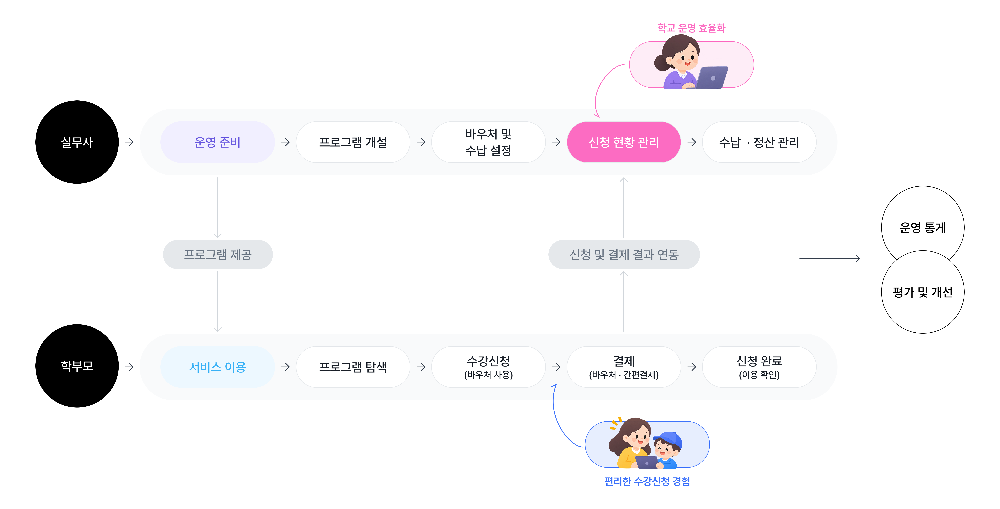
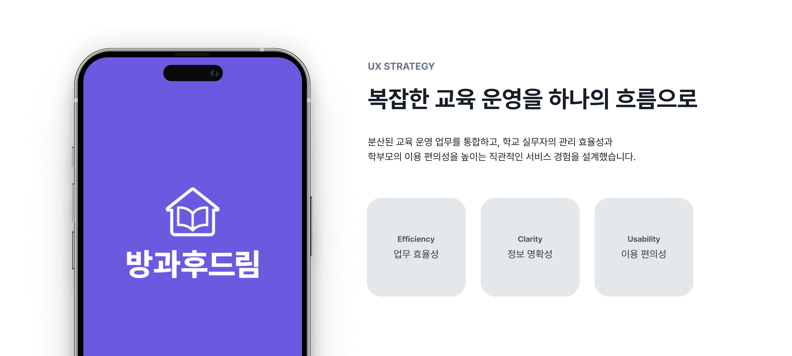
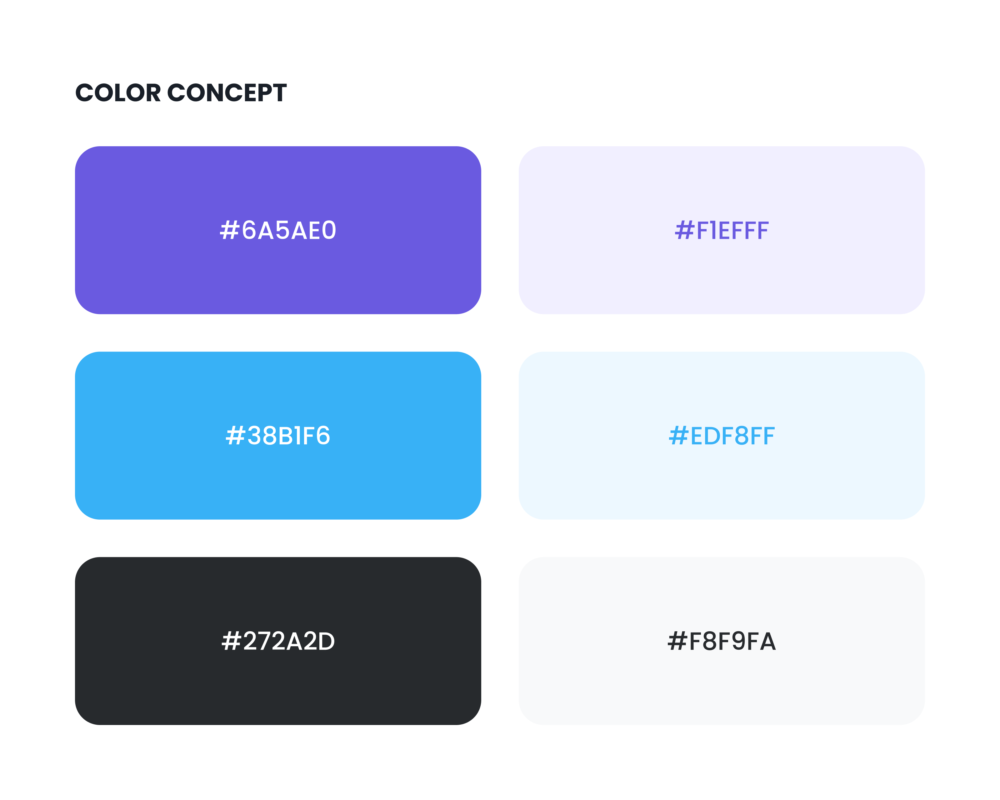
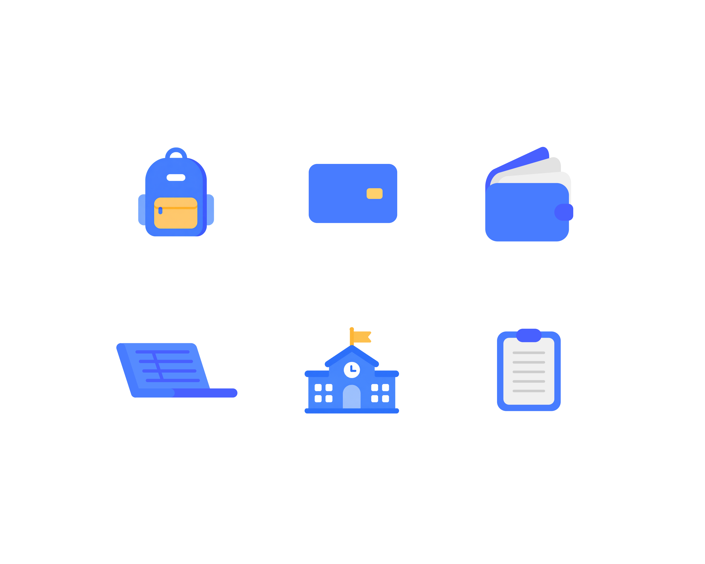
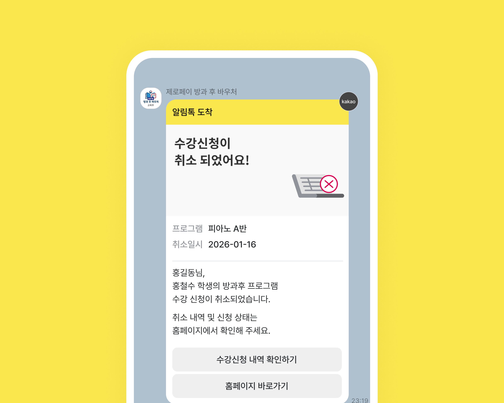

방과후드림
Over View
기존 엑셀과 수기 중심의 방과후 교육 운영 업무를 통합하고, 학교 실무자와 학부모의 이용 목적에 맞춰 설계한 교육 플랫폼입니다. 관리자는 학생·프로그램·바우처·수납 업무를 효율적으로 처리하고, 학부모는 수강신청부터 결제까지 편리하게 이용할 수 있도록 사용자별 서비스 흐름을 구성했습니다.
Keyword
# 통합교육플랫폼# 운영관리# 교육바우처# 수강신청#
사용자중심UX
Service Process
관리자의 운영 업무와 학부모의 수강신청·결제 경험이 하나의 흐름으로 연결되는 방과후드림의 서비스 프로세스입니다.


Design Concept
서비스의 방향성을 시각적인 언어로 정리하고, 일관된 디자인 경험을 설계했습니다.





Service Design
사용자의 이용 흐름을 고려해 주요 화면과 인터페이스를 구성했습니다.


Contents Design
정보를 이해하기 쉽고 매력적으로 전달하는 콘텐츠 경험을 디자인했습니다.


Qualitative Impact
사용자 경험과 서비스 운영 관점에서 얻은 주요 성과를 정리했습니다.